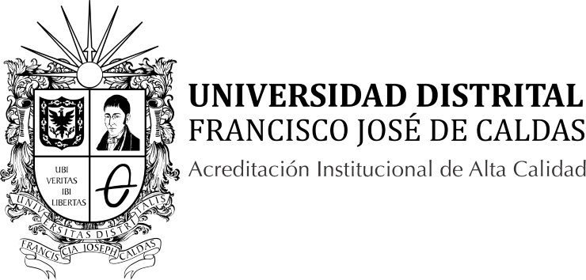
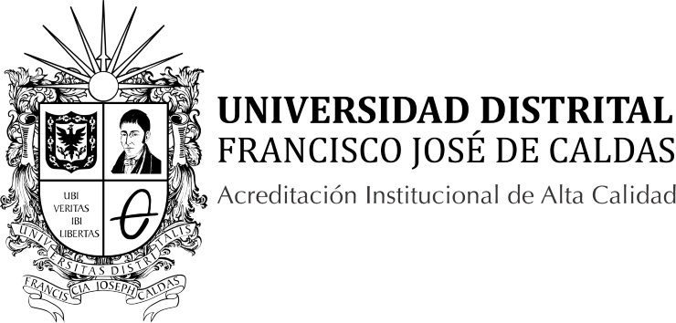

Acerca del Simposio
El simposio 'La Mecánica Cuántica en su Centenario: Un corto paseo por sus inicios y su presente' tiene como objetivo construir comunidad científica y académica entre la Universidad Distrital y la Pontificia Universidad Javeriana.
El evento busca llegar a un público general interesado en entender cómo la mecánica cuántica ha moldeado el mundo en el que vivimos; por ello, se abordarán temas que abarcan desde sus principios fundamentales hasta sus aplicaciones más modernas e impactantes, como lo son la computación cuántica, la gravedad cuántica, la biología cuántica, la metrología cuántica y montajes experimentales.
Para esto, se contará con la participación de ponentes de varias universidades colombianas e invitados internacionales. Este será un espacio de colaboración interinstitucional y divulgación científica de vanguardia en Bogotá y Colombia.
Organizan: Pontificia Universidad Javeriana y Universidad Distrital Francisco José de Caldas.
📅 Fechas y Horario
Fechas: 4 y 5 de diciembre
📍 Ubicaciones
Sesión mañana (8:00 a.m. - 12:30 p.m.): Auditorio 103 - Macarena A - Universidad Distrital Francisco José de Caldas
Sesión tarde (2:00 p.m. - 6:30 p.m.): Auditorio Carlos Corredor - Félix Restrepo - Pontificia Universidad Javeriana
 
